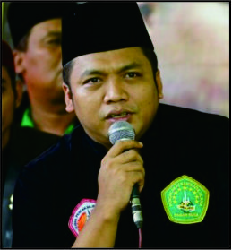

LAA GHLIBA ILLABILLAH
Pada lambang Ikatan Pencak Silat Nahdlatul Ulama Pencak Silat Nahdlatul Ulama Pagar Nusa tertulis Laa ghaaliba Illa billah yang melingkar di bola bumi; terletak di bawah trisula.
Lafaz itu diusulkan KH Suharbillah, seorang pendekar silat dan salah seorang pendiri Pagar Nusa. Mulanya adalah kalimat tersebut adalah la ghaliba illallah,
kemudian KH Sansuri Badhawi mengusulkan untuk menggantinya dengan la ghaliba illa billah.
Kalimat tersebut yang digunakan pada lamabang Pagar Nusa hingga sekarang. Artinya semakna dengan la haula wa la quwwata illa billah.
Menurut Kiai Suharbillah lafadz tersebut, Pagar Nusa ingin kejayaan Islam di Cordova, Spanyol, tumbuh di Indonesia. juga sangat cocok semboyan sebuah perhimpunan bela diri supaya para anggotanya tidak takabur.
Sebab dengan lafadz tersebut, pendekar berpegang teguh bahwa tidak ada yang mengalahkan seseorang, kecuali hanya karena Allah. Dengan slogan itu, pendekar tidak oper dosis bertujuan untuk kemenangan, di atas langit ada langit Ketua Umum Pagar Nusa 2012-2017
KH Aizzudin Abdurrahman menafsirkan lafadz tersebut sebagai tingkat kepasrahan tertinggi seseorang. Meskipun seseorang sakti, tapi tidak boleh merasa sakti. Termasuk kepada musuh kita. Meskipun dia terlihat sakti, tapi ketika tidak dilindungi Allah, dia tidak akan berarti apa-apa.
Menurut Gus Aiz, ada slogan lain yang sering diungkapkan pendiri dan mahaguru beladiri Pagar Nusa yaitu KH Maksum Jauhari, seorang pendekar pilih tanding Pagar Nusa, yaitu “Pantang menantang walau kepada lawan, pantang mundur kalau ditantang. Sebetulnya, slogan tersebut tak jauh dengan laa ghaaliba illa billah.
Sejarah Berdiri dan Para Tokohnya
Menurut Ensiklopedia NU, Pagar Nusa bertugas menggali, mengembangkan, dan melestarikan seni bela diri pencak silat Indonesia.
Nama resminya adalah lkatan Pencak Silat Nahdlatul Ulama (IPS-NU) Pagar Nusa kemudian sekarang membuang kata ikatan, menjadi Pencak Silat NU. Sedangkan Pagar Nusa sendiri berarti pagarnya NU dan bangsa.
Pagar Nusa dibentuk pada 3 Januari 1986 di Pondok Pesantren Lirboyo, Kediri, Jawa Timur.
NU mengesahkan pendirian dan kepengurusannya melalui Surat Keputusan tertanggal 9 Dzulhijjah 1406/16 Juli 1986
Lahirnya Pagar Nusa berawal dari perhatian dan keprihatinan para kiai NU terhadap surutnya ilmu bela diri pencak silat di pesantren. Padahal, pada awalnya pencak silat merupakan kebanggaan yang menyatu dengan kehidupan dan kegiatan pesantren.
Surutnya pencak silat antara lain ditandai dengan hilangnya peran pondok pesantren sebagai padepokan pencak silat. Padahal, sebelumnya pondok pesantren merupakan pusat kegiatan ilmu bela diri tersebut.
Kiai atau ulama pengasuh pondok pesantren selalu merangkap sebagai ahli pencak silat, khususnya aspek tenaga dalam atau hikmah yang dipadu dengan bela diri.
Pada saat itu seorang kiai sekaligus juga pendekar pencak silat. Du sisi Iain tumbuh berbagai perguruan pencak silat dengan segala keanekaragamannya berdasarkan segi agama, aqidah, maupun kepercayaannya. Perguruan-perguruan itu kadang bersifat tertutup dan saling mengklaim sebagai yang terbaik serta terkuat.
Para ulama-pendekar merasa gelisah melihat kenyataan tersebut. KH Suharbillah, seorang pendekar dari Surabaya, menceritakan masalah itu kepada KH Mustofa Bisri di Rembang. Mereka lalu menemui KH Agus Maksum Jauhari (Lirbow) atau Gus Maksum, yang memang dikenal sebagai tokoh ilmu bela diri.
Pada 27 September 1985 mereka berkumpul di Pondok Pesantren Tebuireng, Jombang. Tujuannya untuk membentuk suatu wadah di bawah naungan NU yang khusus mengembangkan seni bela diri pencak silat.
Musyawarah tersebut dihadiri tokoh-tokoh pencak silat dari Jombang, Ponorogo, Pasuruan, Nganjuk, Kediri, Cirebon, dan Kalimantan. Kemudian terbitlah Surat Keputusan Resmi Pembentukan Tim Persiapan Pendirian Perguruan Pencak Silat Milik NU yang disahkan pada 27 Rabi’ul Awwal 1406/ 10 Desember 1985 dan berlaku hingga 15 Januari 1986.
Musyawarah berikutnya diadakan di Pondok Pesantren Lirboyo, Kediri, pada 3 Januari 1986. Musyawarah ini menyepakati susunan Pengurus Harian Jawa Timur yang merupakan embrio Pengurus Pusat. Gus Maksum dipilih sebagai ketua umumnya.
Nama organisasi yang disepakati dalam musyawarah tersebut adalah lkatan Pencak Silat Nahdlatul Ulama yang disingkat IPS-NU yang kemudian sekarang menjadi PSNU. Ketua PWNU Jawa Timur KH Anas Thohir kemudian mengusulkan nama Pagar Nusa. Nama “Pagar Nusa" berasal dan KH Mujib Ridlwan dari Surabaya, putra dari KH Ridlwan Abdullah, pencipta lambang NU. KH Suharbillah mengusulkan lambang untuk Pagar Nusa, yaitu segi lima yang berwarna dasar hijau dengan bola dunia di dalamnya. Di depannya terdapat pita bertuliskan “Laa ghaliba illa billah” yang artinya ”tiada yang menang kecuali mendapat pertolongan dari Allah”. Lambang ini dilengkapi dengan bintang sembilan dan trisula sebagai simbol pencak silat. Sedangkan kalimat ”Laa ghaliba illa billah” merupakan usul dari KH Sansuri Badawi untuk mengganti kalimat sebelumnya, yaitu ”Laa ghaliba ilallah”. Untuk membentuk susunan pengurus tingkat nasional, PBNU di Jakarta membuat surat pengantar kesediaan ditunjuk menjadi pengurus. Surat ini ditandatangani Ketua Umum PBNU KH Abdurrahman Wahid dan Rais Aam KH Achmad Siddiq.
Pagar Nusa mengadakan Munas I di Pondok Pesantren Zainul Hasan, Genggong, Kraksaan, Probolinggo. Surat kesediaan ditempati sebagai penyelenggara munas ditandatangani oleh KH Saifurrizal. la juga yang menentukan tanggal pelaksanaan acara tersebut, yaitu 20-23 September 1991. Namun, ternyata itu adalah tanggal yang tepat dengan 100 hari wafatnya KH Saifurrizal sehingga pada pembukaan acara pun terlebih dahulu diadakan tahlilan. Sesuai hasil Muktamar NU di Cipasung, Tasikmalaya (1994), Lembaga Pencak Silat NU Pagar Nusa berubah status dari Lembaga menjadi badan otonom. Kemudian pada Muktamar NU di Lirboyo (1999),
status Badan Otonom kembali berubah menjadi lembaga. Munas II Pagar Nusa diadakan di Padepokan IPSI Taman Mini Indonesia Indah, Jakarta, pada 22 Januari 2001. Acara ini diikuti perwakilan dari Jawa Timur, Jawa Tengah, Jawa Barat, Lampung, Riau, Bali, Kalimantan, dan Sulawesi. Bahkan, Jawa Timur yang merupakan pusat pengembangan PSNU Pagar Nusa mengikutsertakan perwakilan dari cabang-cabang yang ada di 35 kabupaten/kota se-Jawa Timur dan pondok pesantren. Acara yang dibuka oleh Presiden KH Abdurrahman Wahid ini membahas agenda-agenda:
(1) Organisasi: Membahas masalah Peraturan Dasar dan Peraturan Rumah Tangga (PD/PRT) IPS-NU Pagar Nusa;
(2) Ke-Pasti-an: Membahas masalah Pasti (Pasukan lnti) dan perangkat yang lain yang meliputi seragam dan atributnya, keanggotaan, dan kepelatihan; (3) Teknik dan Jurus: Membahas, menggali, dan menyempurnakan jurus-jurus yang sudah dimiliki oleh IPS-NU Pagar Nusa yang kemudian didokumentasikan dalam bentuk hard copy (buku) dan soft copy (kaset dan VCD).
Saat ini Pagar Nusa memakai seragam khusus, antara Ialn:
(1) Seragam Atlet: baju dan celana berwarna hitam dengan bagde IPSI dl dada sebelah kanan dan bagde Pagar Nusa d£ dada sebelah kiri dilengkapi sabuk kebesaran warna hijau yang diikatkan dengan simpul hidup di sebelah kanan;
(2) Seragam Pasukan Inti (Pasti) Putra: kemeja lengan panjang berwarna hitam, celana warna hitam, sepatu hitam PDH dengan memakai atribut yang telah ditentukan;
(3) Seragam Pasukan lnti (Pasti) Putri: pasukan yang dibentuk dan bertugas pertama kali pada acara Istighatsah Nasional PBNU di Lapangan Kodam V Brawijaya Surabaya pada 15 Mei 2003 ini memakai seragam berupa blazer (jas) berwarna hitam, jilbab hitam, celana hitam, dan memakai sepatu PDH berwarna hitam dengan atribut yang telah ditetapkan;
(4) Seragam Pengurus: baju dan celana warna hitam, jas warna putih, berkopiah hitam, dan bersepatu PDH warna hitam;
(5) Seragam Tim Khos: seperti seragam pengurus ditambah dengan simbol khusus;
(6) Seragam Kebesaran: jubah warna hitam yang dipakai hanya pada ajang tingkat nasional.
Beberapa tokoh yang pernah menjadi Ketua Umum Pagar Nusa adalah :
(1) KH Agus Maksum Jauhari,
(2) KH Suharbillah,
(3)KH Fuad Anwar,
(4) KH Aizuddin Abdurrahman,
(5) dan saat ini H M. Nabil Haroen(gus nabil).
